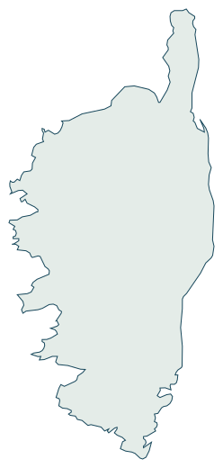

Vous nous confiez
Annonce, réservations, échanges voyageurs et coordination sur place.
Vous gardez
Vos séjours personnels et les décisions qui vous reviennent.
Commission sur les revenus locatifs. Prestations et frais précisés au devis.
Conciergerie familiale en Corse
B — Atlas de proximité
Gestion complète, suivi d’annonce ou accueil entre deux séjours : notre équipe familiale prend le relais sur la côte est de la Corse.
Un premier échange par appel ou email.
Les prestations se définissent selon votre bien.

Contour géographique indicatif, Natural Earth.
Votre adresse permet de confirmer les prestations possibles.
01 / Le partage des rôles
Trois points de départ. Vous gardez la main sur les décisions ; nous définissons ensemble ce que vous nous confiez.
Annonce, réservations, échanges voyageurs et coordination sur place.
Vos séjours personnels et les décisions qui vous reviennent.
Commission sur les revenus locatifs. Prestations et frais précisés au devis.
Pour démarrer ou améliorer une annonce existante.
Voir le suivi d’annonce ↗Présentation, prix, calendrier et suivi de l’annonce à convenir.
L’organisation sur place, sauf prestations convenues séparément.
Périmètre, durée du suivi et coût définis dans la proposition.
Pour garder les réservations et confier le terrain.
Voir l’accueil et les rotations ↗Arrivées, départs, ménage, linge et contrôles selon vos besoins.
La gestion de vos annonces et de vos réservations.
Selon le logement et les passages. Linge et consommables détaillés au devis.
Une adresse, un logement, des besoins particuliers : le périmètre et le coût sont toujours précisés dans la proposition.